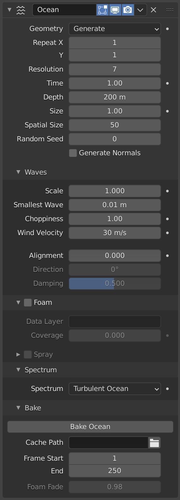
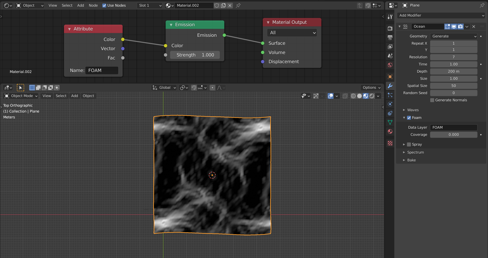

Ocean Modifier¶
Modifier Ocean là một công cụ để mô phỏng và tạo ra bề mặt biển biến dạng, cùng với texture liên quan dùng để render dữ liệu mô phỏng. Nó được thiết kế để mô phỏng sóng biển sâu và bọt biển.
Đây là bản chuyển thể từ mã nguồn mở Houdini Ocean Toolkit.
Tùy chọn¶


Modifier Ocean.¶
- Geometry
- Generate
Tạo một lưới mesh lát gạch tương ứng chính xác với độ phân giải của dữ liệu mô phỏng.
Khi tạo bề mặt mesh, mesh object hiện có sẽ bị ghi đè hoàn toàn bằng lưới biển; điều này bao gồm cả mọi dữ liệu do các modifier trước đó trong stack tạo ra. Một kênh UV cũng được thêm vào, map không gian UV (0.0 đến 1.0) vào lưới mô phỏng.
- Repeat X, Y
Điều khiển số lần lưới được lát gạch theo hai hướng X và Y. UV của các vùng mesh lát gạch này kéo dài ra bên ngoài không gian UV (0.0 đến 1.0).
- Displace
Dùng hình học hiện có thay vì thay thế nó. Các vertex bị dịch chuyển dọc theo trục Z cục bộ.
- Resolution Viewport, Render
Điều khiển chính giữa chất lượng và tốc độ trong engine mô phỏng. Giá trị này quyết định độ phân giải của các lưới 2D nội bộ do mô phỏng tạo ra cho 3D Viewport hoặc cho bản render cuối.
Các lưới nội bộ là lũy thừa của hai của giá trị resolution, ví dụ giá trị resolution
16sẽ tạo dữ liệu mô phỏng kích thước256×256. Resolution càng cao thì chi tiết càng nhiều, nhưng việc tính toán càng chậm.Ghi chú
Khi dùng tùy chọn hình học Generate của modifier, giá trị resolution này cũng quyết định độ phân giải của bề mặt mesh được tạo, bằng với độ phân giải của dữ liệu mô phỏng nội bộ.
- Time
Thời điểm mà bề mặt biển được tính toán. Để tạo biển có animation, bạn cần animate giá trị này. Tốc độ thay đổi của giá trị thời gian sẽ quyết định tốc độ animation của sóng.
- Depth
Độ sâu không đổi của đáy biển dưới vùng mô phỏng. Giá trị thấp hơn mô phỏng nước nông hơn bằng cách tạo chi tiết tần số cao hơn và sóng nhỏ hơn.
- Size
Một hệ số co giãn đơn giản, không ảnh hưởng đến chiều cao của sóng hay hành vi của mô phỏng.
- Spatial Size
Bề rộng của vùng bề mặt biển được mô phỏng, tính bằng mét. Giá trị này cũng quyết định kích thước mesh được tạo, hoặc vùng bị displace. Tất nhiên, bạn có thể scale object có modifier Ocean ở Object Mode để tinh chỉnh kích thước hiển thị trong scene.
- Random Seed
Một Seed khác sẽ tạo ra kết quả mô phỏng khác.
- Generate Normals
Mô phỏng thêm dữ liệu normal map. Dữ liệu này có thể được Ocean texture dùng như một bump map khi được map vào Normals, và cho phép tạo chuỗi ảnh normal map khi bake.
Waves¶
- Scale
Điều khiển co giãn tổng thể cho biên độ của sóng. Nó xấp xỉ chiều cao hoặc độ sâu của sóng so với mốc 0. Thay vì chỉ scale object biển theo trục Z, nó scale mọi khía cạnh của mô phỏng: displacement theo X và Y, cùng với bọt và normals tương ứng.
- Smallest Wave
Giới hạn dưới cho kích thước sóng được tạo. Hoạt động tương tự một bộ lọc thông thấp, loại bỏ chi tiết sóng tần số cao.
- Choppiness
Mức độ gắt của đỉnh sóng. Với độ gắt bằng 0, bề mặt biển chỉ bị dịch chuyển lên xuống theo hướng Z, nhưng với độ gắt cao hơn, sóng còn bị dịch chuyển ngang theo X và Y, tạo ra các đỉnh sóng sắc hơn.
- Wind Velocity
Tốc độ gió tính bằng mét/giây. Với tốc độ thấp, sóng bị giới hạn ở các gợn sóng bề mặt nhỏ hơn.
- Alignment
Tính định hướng của hình dạng sóng do gió gây ra. Ở giá trị 0, gió và sóng định hướng ngẫu nhiên, đồng đều. Với giá trị Alignment cao hơn, gió thổi theo hướng ổn định hơn, khiến sóng trông bị nén lại nhiều hơn và thẳng hàng theo một hướng duy nhất.
- Direction
Khi dùng Alignment, hướng tính bằng độ mà sóng thẳng hàng theo (dùng trục X cục bộ làm mốc tham chiếu).
- Damping
Khi dùng Alignment, giá trị này xác định mức độ các sóng phản xạ lẫn nhau bị triệt tiêu. Nó có tác dụng khiến chuyển động sóng mang tính định hướng hơn (không chỉ hình dạng sóng).
Với Damping bằng 0.0, sóng phản xạ qua lại mọi hướng; với Damping bằng 1.0, các sóng phản xạ lẫn nhau này bị triệt tiêu, chỉ còn lại sóng truyền theo hướng gió.
Foam¶
Mô phỏng thêm dữ liệu bọt.
Dữ liệu này có thể được Ocean texture lấy ra để dùng cho texturing (có thể như một mask), và cho phép tạo chuỗi ảnh foam map khi bake.
- Data Layer
Tên tùy chọn cho vertex data layer, được Ocean Modifier dùng để lưu foam map dưới dạng Color Attribute. Điều này là bắt buộc để truy cập dữ liệu bọt trong renderer.
- Coverage
Tinh chỉnh lượng bọt phủ lên sóng, giá trị âm sẽ giảm lượng bọt (chỉ để lại các đỉnh cao nhất), giá trị dương sẽ bổ sung thêm. Thường nằm trong khoảng (-1.0 đến 1.0).

Dùng foam Color Attribute với một data layer có tên.¶
Spray¶
Tạo map hướng nước bắn lên (spray) dưới dạng Color Attribute. Map này có thể được dùng để xác định vận tốc cho các hạt spray.
- Spray Map
Tên của Color Attribute dùng cho map hướng spray.
- Invert
Đảo ngược map hướng spray.
Spectrum¶
- Spectrum
Dùng để chọn mô hình phổ sóng cần dùng. Phổ sóng được dùng để mô tả cách năng lượng di chuyển qua các sóng ở những tần số khác nhau. Năng lượng truyền qua sóng theo cách khác nhau tùy thuộc vào độ sâu của nước và tốc độ gió.
- Turbulent Ocean
Dùng cho biển động có bọt (Phillips).
- Established Ocean
Dùng cho đại dương rộng, đã ổn định, nơi biển trải dài hàng dặm với gió thổi trong nhiều ngày, cho phép sóng đạt đến điểm cân bằng (phương pháp Pierson-Moskowitz).
- Established Ocean (Sharp Peaks)
Tương tự Established Ocean thường, tuy nhiên sóng sẽ tiếp tục lớn dần theo thời gian tạo ra các đỉnh sắc hơn (JONSWAP và phương pháp Pierson-Moskowitz). Một tham số bổ sung được dùng để xác định độ sắc của các đỉnh này.
- Shallow Water
Dùng cho nước nông với độ sâu dưới khoảng 10 mét, rất phù hợp cho hồ nhỏ và ao không có gió mạnh (các phương pháp JONSWAP và TMA -- Texel-Marsen-Arsloe).
- Sharpness Peak
Một hệ số nhân tạo để điều khiển độ sắc của đỉnh sóng trong các mô hình phổ Established Ocean (Sharp Peaks) và Shallow Water.
- Fetch
Khoảng cách từ bờ khuất gió, gọi là fetch, hoặc khoảng cách mà gió thổi với tốc độ không đổi. Được dùng bởi các mô hình phổ Established Ocean (Sharp Peaks) và Shallow Water.
Bake¶
Thay vì mô phỏng dữ liệu biển trực tiếp, bạn có thể bake nó vào các file trong một thư mục cho trước. Khi mô phỏng đã được bake, engine mô phỏng sẽ được bỏ qua hoàn toàn, và mọi thông tin cho modifier hoặc texture đều được lấy từ các file đã bake.
Việc bake có những ưu điểm sau:
Dùng dữ liệu đã lưu nhanh hơn là tính toán lại.
Cho phép render dữ liệu biển bằng các renderer bên ngoài.
Cho phép các foam map nâng cao hơn.
Dữ liệu mô phỏng được lưu thành các chuỗi image map OpenEXR, mỗi loại một chuỗi cho displacement, normals và foam (nếu được bật tạo). Khi dữ liệu được nạp từ các file đã bake này, mỗi frame của chuỗi bake khi được đọc sẽ được cache trong bộ nhớ. Điều này có nghĩa là việc truy cập lại các frame đã nạp ở những lần sau sẽ nhanh, không tốn chi phí truy cập ổ đĩa.
Vì các file đã bake này là OpenEXR thông thường, chúng cũng có thể được mở và render trong bất kỳ ứng dụng hoặc renderer nào khác có hỗ trợ định dạng này.
- Cache Path
Thư mục để lưu các file EXR đã bake. Các chuỗi file sẽ có dạng
disp_####.exr,normal_####.exrvàfoam_####.exr, trong đó####là số frame bốn chữ số. Nếu thư mục cache path chưa tồn tại, nó sẽ được tạo.- Frame Start, End
Các frame của mô phỏng cần bake (bao gồm cả hai đầu). Frame bắt đầu và kết thúc của bản bake được lặp lại khi truy cập các frame nằm ngoài dải đã bake.
- Foam Fade
Việc bake còn cung cấp khả năng bọt tốt hơn. Khi mô phỏng trực tiếp, bộ mô phỏng biển chỉ lấy dữ liệu của frame hiện tại. Với foam map, điều này thể hiện các đỉnh sóng của đúng frame đó. Trên thực tế, sau khi bọt được tạo bởi tương tác sóng, nó vẫn nằm trên bề mặt sóng một lúc rồi mới tan. Với việc bake, có thể xấp xỉ hành vi đó bằng cách tích lũy bọt từ các frame trước, để bọt còn lại trên bề mặt.
Ví dụ¶
Ví dụ dưới đây được tạo và render trong Blender, lưu ý các đỉnh sóng có màu trắng; đây là hiệu ứng được tạo từ dữ liệu bọt.